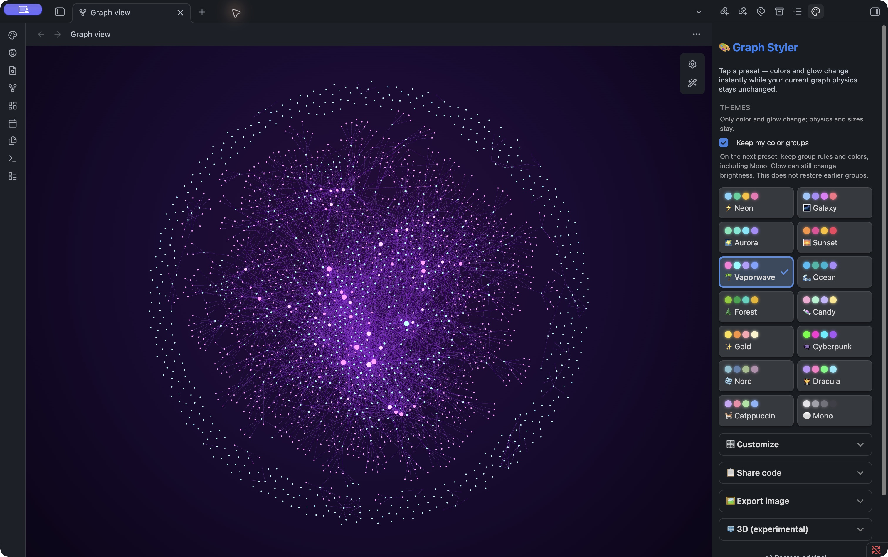
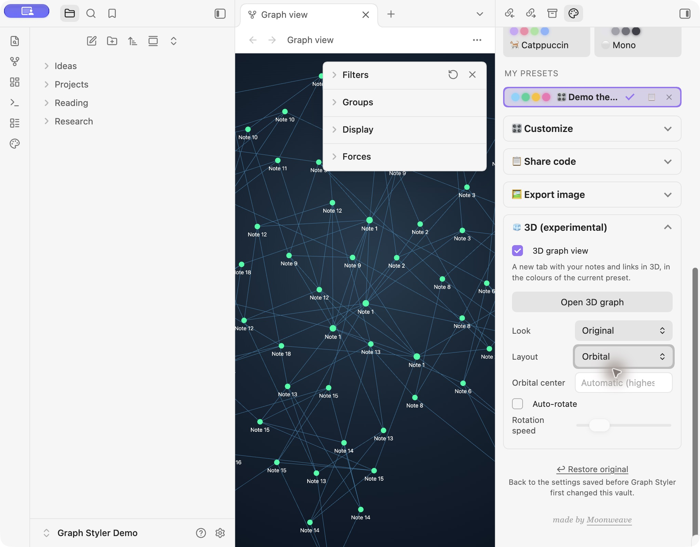
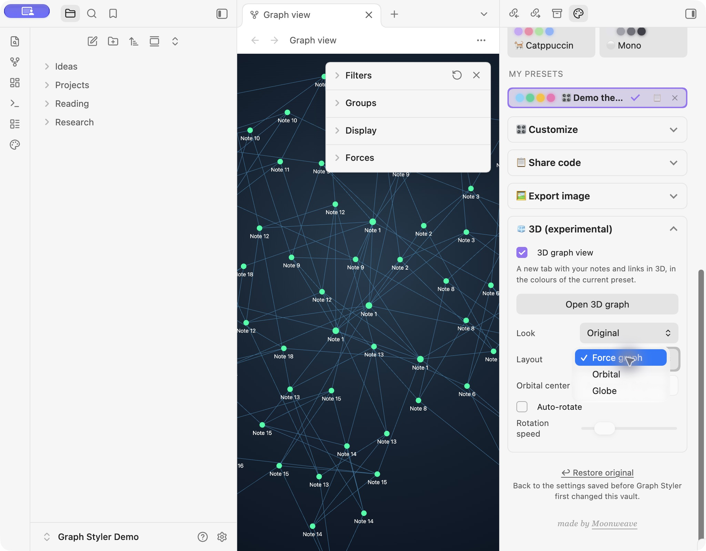

내 분류 색을 지키려면


이미 그룹별로 색을 정해 두었다면, 테마를 누르기 전에 내 색상 그룹 유지를 켜세요. 0.4.1에서 추가된 옵션이에요.
- 그룹의 검색 조건·순서·색을 유지해요. Mono와 실시간 미리보기에서도 동일합니다. 글로우에 따라 보이는 밝기는 달라질 수 있어요.
- 기본값은 꺼짐. 켜면 그룹 색 선택이 비활성화되고 로컬 그래프의 별도 그룹도 건드리지 않아요. 설정은 이 볼트에만 기억하며 공유 코드에는 넣지 않습니다.
- 앞서 덮어쓴 그룹을 복구하지는 않아요. 끈 상태에서는 테마가 자동 그룹을 적용하고 Mono는 그룹을 비웁니다.
3D는 이렇게 열어요


패널의 🧊 3D (실험 기능)을 펼쳐 3D를 켜고 3D 그래프 열기를 누르세요. 기본값은 꺼짐이며, 실험 기능이라 이후 바뀔 수 있어요.
배치와 화면 분위기는 별개예요. 배치는 Force·Orbital·Globe 세 가지, 분위기는 기본·Deep Space 두 가지입니다.
| 배치 | 보여주는 것 | 주의할 점 |
|---|---|---|
| Force | 연결과 반발력에 따라 공간에 퍼진 그래프 | 기본 배치. 2D와 거리·겹침 방지 방식이 같지는 않아요. |
| Orbital | 선택한 중심에서 링크로 몇 단계 떨어졌는지에 따른 구면 배치 | 중심은 검색해서 지정. 자동은 보이는 노트 중 연결이 가장 많은 노트예요. |
| Globe | 색 그룹을 구면의 영역에 놓고 곡선으로 연결 | 노트의 지리적 위치나 의미적 거리를 뜻하지는 않아요. |

드래그로 회전, 스크롤·핀치로 확대, Shift+드래그나 오른쪽 드래그로 이동. 노드에 마우스를 올리면 이름과 연결이 강조되고, 클릭하면 노트가 열려요. 자동 회전은 끌 수 있습니다.
필터를 바꿨다면 3D 탭을 다시 열어주세요. 열린 전체 그래프의 보이는 노드·링크를 가져오는 방식이며 실시간 필터 갱신은 아직 안 돼요. 전체 그래프가 없으면 Markdown 노트 전체를 사용하고, 로컬 그래프는 가져오지 않습니다. 색 그룹은 path:·tag: 조건을 지원하며, 모든 검색 조건이나 화살표·텍스트 페이드 설정이 그대로 따라오지는 않아요.


이미 설치했다면
설정 → 커뮤니티 플러그인 → 업데이트 확인에서 Graph Styler를 업데이트하세요. 버전이 0.4.1인지 확인하면 됩니다. 수동 설치는 GitHub 릴리스의 main.js·manifest.json·styles.css 세 파일을 플러그인 폴더에 넣는 방식이에요.
확인일: 2026-10-14 · 데스크톱 전용 · 가이드: @phd.ai.log · 플러그인: Moonweave